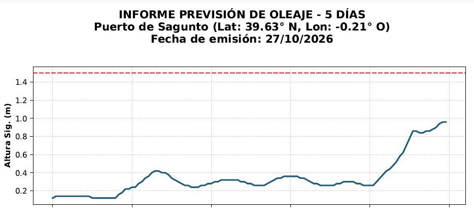

Sobre mí
Profesional con experiencia en el análisis de datos de pruebas experimentales y la gestión de proyectos integrales. Actualmente cursando el Máster en Big Data y Data Science online. Especializado en transformar datos complejos en narrativas visuales y decisiones estratégicas.
Portfolio de Proyectos

Automatización de Informes de Previsión de Oleaje
Desarrollo de un script en Python que elimina por completo el trabajo manual de recopilación diaria de datos. El sistema, alojado en un servidor NAS Synology, consulta cada mañana la predicción del estado del mar en el Puerto de Sagunto a través de Puertos del Estado. Procesa la información, renderiza un informe detallado en formato PDF y lo distribuye automáticamente al equipo técnico, permitiendo enfocar los recursos en el análisis directo de los datos experimentales.
Régimen Oleajes en el Port de Sagunt
Mi empresa, Rotary Wave, dentro del proyecto europeo RENMARINAS y en colaboración con la Autoridad Portuaria de Valencia, va a instalar un dispositivo de generación undimotriz en el Port de Sagunt y para ello, antes de la fase de diseño del dispositivo fue necesario crear este dashboard para analizar las condiciones climáticas de la ubicación y ver a qué tipo de oleaje se iba a enfrentar. Además, en este caso, decidí hacer el dashboard en formato storyboard, en el que la información esté distribuida pasando pantallas y se responda a las 4 principales preguntas que siempre nos hacemos cuando analizamos una nueva ubicación, la altura, la dirección, la estacionalidad y la energía prevista.
Refuerzos 2025, CIM Torrefiel
Además de en el ámbito profesional, también me entusiasma aplicar mis conocimientos de ciencia de datos a mis hobbies y ámbitos personales. También soy músico y formo parte de la Banda de Música de Torrefiel, en la cuál siempre tenemos problemas para completar los actos y nos toca ir buscando gente de fuera que venga a reforzar. Por ello, después de recopilar la información de todos los actos que la banda realizó durante el año 2025, decidí hacer este dashboard para poder visualizar y analizar cuáles pueden ser las causas principales del problema, qué instrumentos son los que más nos hacen falta y en qué tipo de actos se suelen necesitar más refuerzos distinguiendo entre los actos de concierto y los actos que la banda realiza tocando por la calle como puedan ser pasacalles o procesiones.
Clima en Orihuela
En un proyecto de mi empresa, Rotary Wave, se planteó la opción de instalar un evaporador de salmueras en un campo agrícola de Orihuela. Como la eficiencia del evaporador depende en gran medida de las condiciones de temperatura, humedad y viento, preparé este dashboard para analizar el clima de la zona donde se preveía instalar de los últimos 3 años, para poder valorar la eficiencia que tendría el dispositivo.
Proyecto Match Up: Energía Generada
En este dashboard se muestra un análisis de la energía generada durante el desarrollo del proyecto Match Up, a través de un dispositivo de energía undimotriz desarrollado por mi empresa, Rotary Wave, y colocado en el dique exterior del puerto de València entre junio de 2023 y junio de 2024.
Régimen de Oleajes en El Salvador
Recibimos un contacto en mi empresa, Rotary Wave, desde El Salvador con interés en instalar uno de nuestros dispositivos de generación undimotriz, así que, como siempre en estos casos, creé este Dashboard para analizar el régimen de olas en la ubicación propuesta para poder hacer una valoración previa del nivel de olaje disponible y qué cantidad de energía se podría generar.
Temperaturas en Trondheim
Mi primo se iba de Erasmus a Trondheim en el primer semestre del curso y queríamos ir a visitarle de viaje pero queríamos saber las temperaturas de la ciudad para valorar en qué mes nos convenía más ir. Para ello, pensé en crear este dashboard para poder visualizar fácilmente en un solo vistazo las temperaturas máximas y mínimas entre septiembre y enero en Trondheim los últimos 4 años, mes a mes.
Matriculaciones DGT
Este es el primer Dashboard que creé para un ejercicio de clase del Máster de Big Data. En él, se analiza la distribución de las matriculaciones de vehículos nuevos en España desde 2008 hasta 2023.